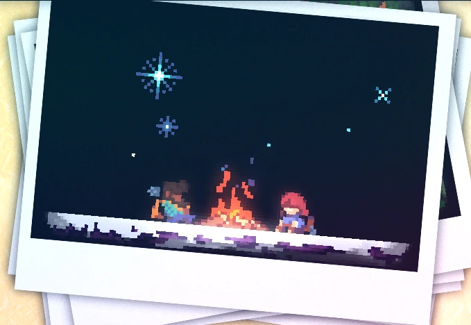
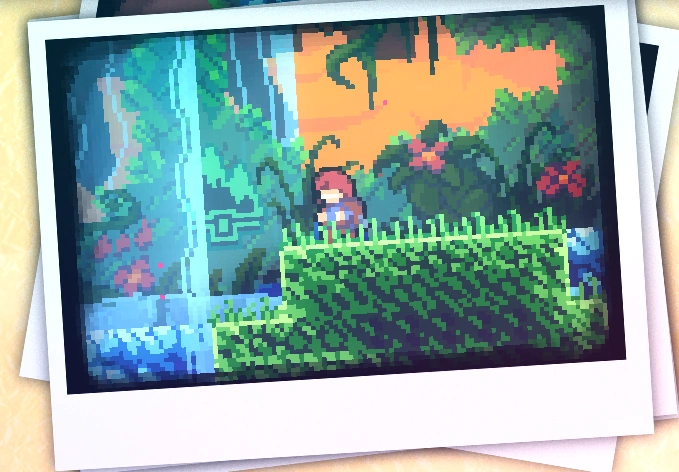
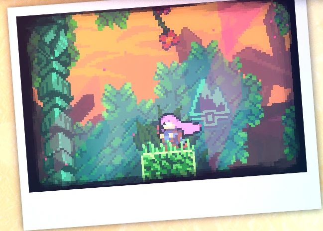

Capítulo 6: Reflexão
Reflexão é o sexto capítulo de Celeste. Considerado por muitos o capítulo mais preciso, a fase contém grande dificuldade.
Mecânicas
Plot
O capítulo começa com Madeline e Theo fazendo uma pausa perto de uma fogueira. Madeline revela suas lutas contra a depressão e ansiedade. Em um sonho, ela decide libertar a perturbadora Parte Dela, resultando em um confronto com Badeline. Madeline cai em uma caverna de cristal, sentindo-se sem esperança. Ao encontrar a Velha Mulher, ela aprende a cooperar com Badeline. Após uma luta contra um chefe, elas se fundem, adquirindo uma nova habilidade. Elas sobem de volta, se reúnem com a Vovó e Theo, e decidem tentar o cume novamente, enfatizando o poder da cooperação.
Diálogos
Coletáveis
Coração de cristal:
O Coração de Cristal do Capítulo 6 está localizado no início do terceiro subcapítulo, Hollows. No início do subcapítulo, o jogador deve usar a Plataforma Furiosa para quebrar a parede abaixo e alcançar a primeira Pena. Em seguida, deve utilizá-la para voar para cima e à direita, e depois descer rapidamente para quebrar a Parede Quebrável, revelando a segunda Pena. O jogador deve usar essa Pena para voar para cima, depois subir até a terceira Pena e, por fim, utilizar essa Pena para voar para a esquerda da tela, revelando a entrada de uma sala secreta. Após passar pela sala e quebrar outra Parede Quebrável, o jogador se deparará com um quebra-cabeça com uma estátua, 6 cristais coloridos, 4 tochas e 3 símbolos.

Fita cassete:
A fita cassete do capítulo 6 é adquirida no terceiro subcapítulo em uma sala secreta.

Morangos:
• Morango dourado:
Conseguido após concluir a fase enquanto segura o morango dourado. Só pode ser coseguido após concluir o lado B do capítulo 8.
Subcapítulos
Reflexão possui 6 subcapítulos:
Início
Templo
Antiga Trilha

Face do Penhasco

Face do Penhasco

Face do Penhasco
